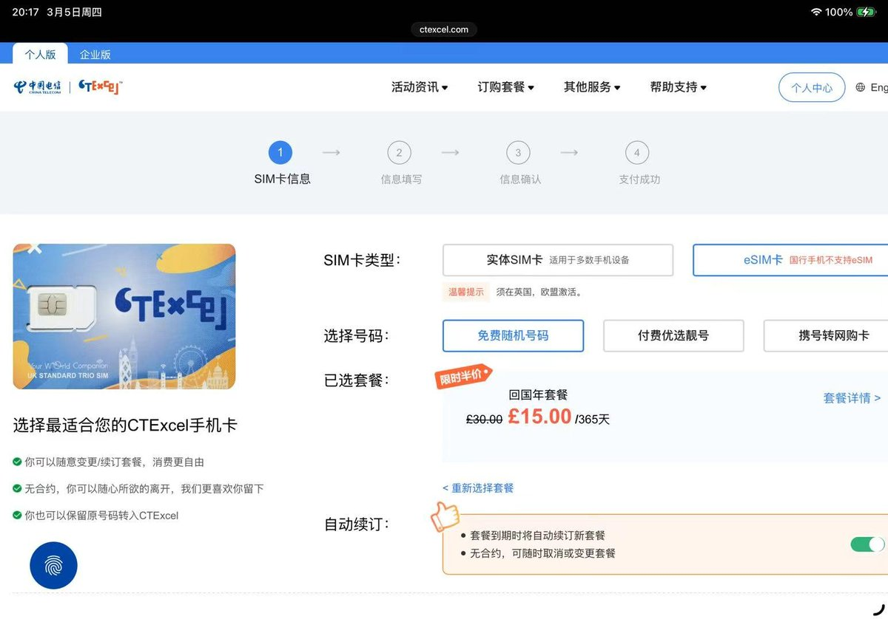

已严肃购入两张（ 300GB/m 和 50 GB/m ）
绑定万事达/VISA卡并自动续费还有半年 7.5 折优惠
不过激活得原生英国 IP ，所以我还得再买个 GiffGaff eSIM + ESTK 用于激活 CTExel UK😇
ESTK 卡在 Mac mini 上还要用，所以算不上浪费

绑定万事达/VISA卡并自动续费还有半年 7.5 折优惠
不过激活得原生英国 IP ，所以我还得再买个 GiffGaff eSIM + ESTK 用于激活 CTExel UK😇
ESTK 卡在 Mac mini 上还要用，所以算不上浪费

CTExcel UK又开放eSIM选项，无需实体卡付3英镑转eSIM补卡费。
趁着回国年套餐半价还有最后一天（3月5日）恢复原价有需要的推友可补车，24英镑50GB，15英镑15G。
如果有大流量需求可留意【英国卡套餐】每月19.9英镑的中英共用300GB流量，还有欧洲20GB流量，在国内用换算下来0.6RMB/GB（官网汇率）。 https://t.co/pKHqA0Nfzx
趁着回国年套餐半价还有最后一天（3月5日）恢复原价有需要的推友可补车，24英镑50GB，15英镑15G。
如果有大流量需求可留意【英国卡套餐】每月19.9英镑的中英共用300GB流量，还有欧洲20GB流量，在国内用换算下来0.6RMB/GB（官网汇率）。 https://t.co/pKHqA0Nfzx